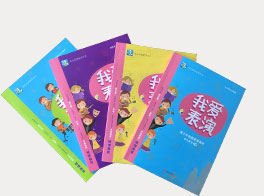

首页
教材&教参
认证测评
研学
艺术节
戏剧校园
合作伙伴
戏剧盒子
关于我们
视频中心
登录
修改密码
推出
APP下载
公办校戏剧表演教参教材
适用
小学一年级~初中三年级
趣味性强，契合青少年爱玩的天性，在娱乐中获得自信与自我认知。
积极的引导方式

艺术类机构戏剧表演教参教材
适用
学龄前到小学（4-12岁）
学生测评指定用书
针对性强、实操性强
教材结构
专业戏剧类教参教材
专业教研团队
强大的师资力量，是学好专业技能的保障
赵韵茗、乐音、石良业、张梦瑾、龙汉雯、沙作颖等编创人员
方子
北京儿童艺术剧院优秀儿童剧演员，著名青少年戏剧教育专家，国际戏剧教育大会特聘嘉宾、北京市教委“高参小”项目挂职校长。
谢柏梁
中国戏曲学院戏文系主任，北京市教学名师，国家二级教授，博士生导师。国务院政府特殊津贴专家。
周杰
北京西城教育研修学院艺术教研室主任、中央教科院艺术教育研究中心副主任、教育部艺术课程标准研制组专家。
唐莹
毕业于中央戏剧学院，主要从事青少年戏剧、戏曲教育。拥有多年的教学与舞台实践经历。
刘付大纬
本硕专业为影视表演和发展与教育心理学,优秀的戏剧教育与教育戏剧教师。
钱君
毕业于中央戏剧学院，优秀戏剧导演，北京儿童艺术剧院实力派青年演员，曾导演过多部话剧与儿童剧作品。
柴仲思
毕业于中央戏剧学院表演系硕士研究生、台湾文化大学戏剧系导演、表演、教育剧场专业。曾任北京现代音乐学院表演系表演教师。
韩萱
英国华威大学戏剧与剧场教育专业，拥有丰富的教育戏剧教学经验，曾在英国当地多所小学、中学开展教育戏剧工作坊与教育剧场项目。